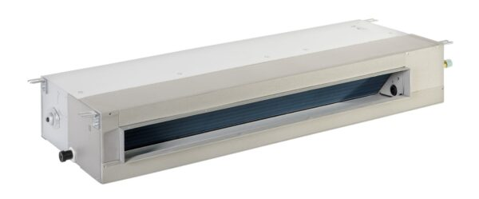
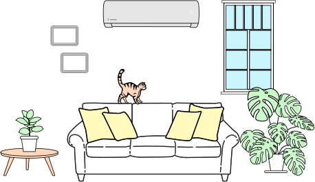
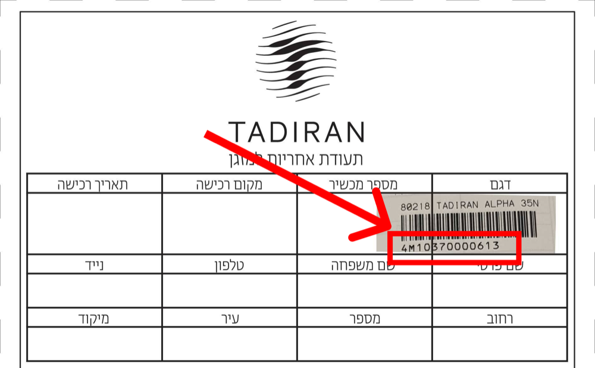

הוראות שימוש
כאן תוכלו לבחור את דגם המזגן שלכם ולהוריד את הוראות השימוש לתפעול מהיר וקל שלו. אנחנו כאן לכל שאלה נוספת.
מזגן ·
שלחנו אישור לכתובת המייל שהזנתם. אלה האחריויות שהופעלו:
שלום, ברוכים הבאים לממשק הפעלת האחריות של תדיראן.
אנא בחרו סוג מוצר להפעלת אחריות:
MY TADIRAN
מתקדמים למערכת ההפעלה החכמה של MY TADIRAN: שליטה במזגנים, שירות VIP ותזכורות תחזוקה, בכל זמן ומכל מקום.
מתאימה לכל מזגני תדיראן: עיליים, מיני מרכזיים ו-VRF. אפליקציה אחת שולטת בכולם.

כאן תוכלו לבחור את דגם המזגן שלכם ולהוריד את הוראות השימוש לתפעול מהיר וקל שלו. אנחנו כאן לכל שאלה נוספת.
אנחנו כאן כדי לסייע לך לקבל את ההחלטה המושכלת ביותר עבורך, באמצעות מספר שאלות קצרות.

ריכזנו לכם שאלות נפוצות שבהן נתקלים נציגי השירות שלנו.
בעת ההפעלה במצב חימום קיימת השהיית לפעולת המאוורר ביחידה הפנימית למשך כ- 20 שניות. במידה והוא אינו עובד גם לאחר משך זמן זה יש לבדוק האם המאוורר הפנימי תפוס/חסום או האם קיימת תקלה במנוע מאוורר פנימי לצורך כך הזמן שירות 1-700-700-946.
לא! הפיקוד שעל הקיר צריך להיות דולק על מנת שיהיה ניתן להפעיל את המזגן מהשלט ולכן, יש לכבות ולהדליק את המזגן מהשלט ולהשאיר את הפיקוד (שעל הקיר) דולק . (להבהרות נוספות יש לפנות אל המח' הטכנית באמצעות "צור קשר").
כן! קיימת "ערכה דו עינית" אשר תאפשר הפעלת המזגן ושינוי מצבי פעולה משני חדרים שונים וזאת, בעזרת שלט אחד. הערכה מתחברת ליחידת הפיקוד והבקרה של המזגן (RT).
כן! ניתן להפעיל בעת ובעונה אחת, מזגנים מדגמים שונים הנמצאים באותו חלל , באמצעות שלט רחוק אחד. כדי לבטל אפשרות זאת יש לפנות לשירות 1-700-700-946.
פונקציה זאת קיימת בשלט הרחוק והפעלתה מאפשרת שידור באופן קבוע למזגן והעברת הטמפרטורה המורגשת באזור בו נמצא השלט. המזגן יעבוד בתפוקה מלאה עד לקבלת הטמפרטורה הרצוייה באזור בו נמצא השלט. יש לוודא קשר עין ללא הפרעות בין השלט רחוק לבין המזגן.
מאחר ותפוקת המזגן תלויה בטמפרטורה אשר מחוץ לבית כמובן שבימים קרים מאד תפוקת המזגן יורדת. לכן, במזגנים המיני מרכזיים ישנה אפשרות חיבור לגופי חימום ושליטה עליהם. ניתן להוסיף בתעלה הראשית של מיזוג האוויר גופי חימום אשר הפעלתם תהיה ע"פ הוראת הפיקוד של המזגן. מומלץ לפנות ליועץ מקצועי.
רצוי לפנות למתקין שביצע את ההתקנה או, לכל איש מקצוע אחר אשר מכיר את דגם המזגן שברשותך.
ניתן לפנות בנושא למחלקת ההתקנות של החברה.
בעת הפניה יש לציין, בין היתר, את הפרטים הבאים:
1. דגם המזגן.
2. סדר גודל של נפח המיזוג החדש והאם דומה לקודם.
3. מה המרחק הצפוי בין היחידה החיצונית לפנימית.
על סמך הערכת נתונים אלה, ניתן יהיה לקבל הצעת מחיר ראשונית.
לפנייך מס' אפשרויות מומלצות: – רצוי להזמין את ההתקנה במקום בו נקנה המזגן.
– רצוי לפנות למתקין שניתנה עליו חוות דעת טובה ומקצועית.
– רצוי לפנות למתקין הנושא תעודה המוכיחה שעבר הדרכות בתדיראן מוצרי צריכה.
– ניתן תמיד לפנות למחלקת ההתקנות בתדיראן מוצרי צריכה.
בתקופת החורף, כאשר המזגן מופעל במצב חימום, היחידה החיצונית משמשת כמאדה שעליה מתעבים אדי המים המתנקזים החוצה ולשם כך, קיימת פיית ניקוז חיצוני בתחתית המזגן. במידה ורוצים לנקז את המים לנקודה כלשהי יש לחבר צינור שרשורי .
את המסנן יש לנקות כל 250 שעות עבודה או פחות, בהתאם לנתוני המבנה הממוזג. אי ניקוי המסנן יגרום לירידה בתפוקה ועליה בלחץ על המפוח. כל 250 שעות עבודה נדלקת נורת "FILTER" או על מנת לכבות אותה לאחר ניקוי המסנן, יש ללחוץ על לחיץ ה- OFF או RESET.
רצוי להעביר את המסנן תחת מים זורמים פושרים ולוודא שכל הלכלוך נשטף. אח"כ יש לתת למסנן להתייבש באוויר אך לא בשמש! במקרים קשים, ניתן להשתמש בחומרי ניקוי קלים ולהשרות בהם את המסנן. חובה לשטוף אח"כ את המסנן במים זורמים.
יש להקפיד כי הפתחים של היחידה החיצונית לא יהיו חסומים במרחק של לפחות 15 ס"מ מהקיר ו- 60 ס"מ מלפנים (כפוף להנחיות התקנה של המזגן). אין לשים על היחידה חפצים כמו מטליות או בד העלולים להחליק לתוכה. כמו כן אין לשים על היחידה מכלים עם נוזלים העלולים להישפך לתוכה. היחידה עמידה נגד גשם אך לא נגד שיטפון.
היחידה הפנימית תוכננה כך שתהיה נעימה לעין ופונקציונלית. יש למנוע הצטברות אבק ומשקעים אחרים על היחידה. משקעים אלה עלולים לפגוע במראה החיצוני שלה ולהישאב לתוך המסנן. יש לנקות במטלית אבק יבשה או טבולה בחומרי ניקוי קלים, למניעת פגיעה ביחידה. יש להימנע מפגיעה פיסית ביחידת הפיקוד או בעינית.
יש לבדוק: אספקת חשמל למזגן, חיבור לרשת החשמל, מצב המפסקים האוטומטיים וכד'. אם הכל נראה תקין – נא לפנות לשירות 1-700-700-946 (במזגני חלון אין נורית Stand By).
לא בוצעה או לא נקלטה פקודת הפעלה. יש לבדוק במקביל הפעלה ידנית מלוח הפיקוד (שעל המזגן) והפעלה מהשלט. אם ההפעלה הידנית מהפיקוד נכשלה, נא לפנות לשירות. אם ההפעלה מהשלט נכשלה, יש לבדוק את סוללות השלט. אם הן תקינות, נא לפנות לשירות 1-700-700-946.
יש לבדוק האם מסנני האוויר מלוכלכים או חסומים. במידה וכן יש לנקותם! אפשרות אחרת היא שיש דליפת גז (העלולה לגרום גם לקפיאת הסוללה הפנימית במצב קירור) במקרה כזה יש להזמין שירות 1-700-700-946.
המזגן נמצא בפעולת הפשרה ( De-Iceing ) יש להמתין כ- 10 דקות לסיום ההפשרה.
– קיימות הפרעות אלקטרוניות המשבשות את פעולת השלט-רחוק. שלוף את התקע משקע החשמל וחבר אותו מחדש.
– האם השלט-רחוק נמצא בטווח השידור והקליטה של המזגן? האם יש עצמים החוסמים את קו הראייה בין השלט-רחוק לבין המזגן?
– בדוק את הסוללות שבשלט-רחוק, החלף אותן אם הן חלשות או ריקות.
-בדוק אם השלט-רחוק שלם ותקין והאם השלט מקודד בצורה תקינה.
– עינית התצוגה ביחידה אינה תקינה, יש לפנות למחלקת השירות בטלפון 1-700-700-946
מקרה נדיר ביותר. נא לפנות לשירות- 1-700-700-946. נציין כי, מזגני תדיראן עובדים בתחום תדרים, המאושר ע"י מכון התקנים.
האחריות להתקנה הינה של מבצע ההתקנה בלבד ולכן: אם ההתקנה בוצעה ישירות ע"י תדיראן יש לפנות למח' ההתקנות שלנו. אם ההתקנה בוצעה ע"י מתקין פרטי, יש לפנות אליו ישירות.
יש להפסיק מיד את עבודת המזגן. נזילה שאינה תוצאה של התקנה לקויה יכולה לנבוע משינוי מיקום של צינור הניקוז, או חסימה שלו כתוצאה מלכלוך או קיפול. יש לאפשר זרימה חופשית של המים בצינור הניקוז כלפי מטה ולוודא שאין בועות אוויר החוסמות את היציאה. אם התופעה ממשיכה יש לפנות לשירות.
מים היוצאים מפיית צינור הניקוז אינם מהווים בעיה. כמות המים היוצאת מהצינור תלויה מאד בלחות של האוויר והיא תוצאה של התעבות. רצוי לדאוג לכך שיציאת הצינור תהיה במקום בו המים היוצאים לא יהיו למטרד הסביבה.
לא מצאתם תשובה לשאלה שלכם? צרו איתנו קשר
הפרטים שמילאתם לא יישמרו.
המספר הסיריאלי מופיע על מדבקת הברקוד שבתעודת האחריות, מתחת לשם הדגם.
